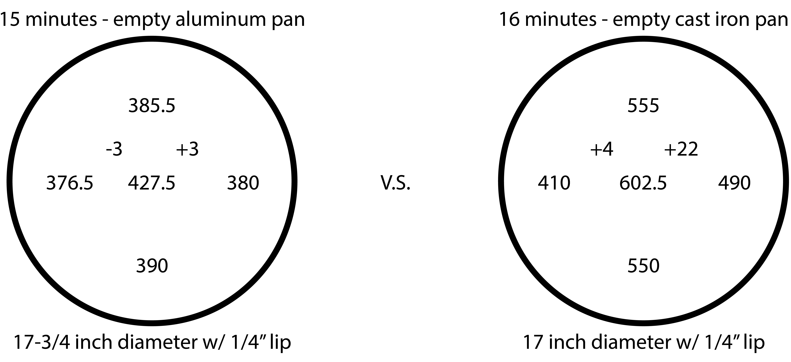

What's the Best Frying Pan?
Cast Iron vs. Aluminum
Which is the best Frying pan?
Cast Iron heats up 3.2 times faster than aluminum.
Cast Iron retains heat 1.5 times longer than aluminum.
After dropping food in aluminum it goes down from 440 to 360 (80 degree difference) in the center and 200 on the sides vs. Cast iron goes from 647 to 500 (147 degree difference) in the center and 300 on the sides.
Cast Iron at this temperature only requires 4 minutes of cooking vegetables, which leaves the pan at 350 (down 150 degrees from 500)... while Aluminum requires 6 minutes of cooking vegetables, which leaves the pan at 292 (down 68 degrees from 360).
However...


Aluminum is 2.28 times more even at spreading heat across the pan. As long as you have a thick aluminum base.
Aluminium is 1.64 times faster to clean. Mostly because cast iron requires a coat of oil each time it's cleaned.
The downside to Aluminium with a non-stick coating is that around 425 degrees you can smell the non-stick coating in an empty pan. However, as long as you don't heat it past 480 degrees the chemical PTFE is within a safe range of not breaking down. The more dangerous chemical PFOA has been banned in America and hasn't been used in pans since 2015.
Also, you can't use oil with low smoke points while cooking... not only is it bad for your health, but also damages the non-stick coating. You should never see white smoke when it's just oil in the pan. That's why I oil my vegetables instead of oiling my pan. That way the pan has time to preheat without the risk of burning the oil.
You can also find either diamonds or titanium mixed in with the non-stick coating which help protect it against wear-and-tear, prolonging its lifespan.
The downside to Cast Iron is having black flakes come off the pan even after being cleaned (also you can't use soap), especially if you cook with acidic food (lemons, tomatoes, wine, vinegar) since it reacts with cast iron.
Considering all of this, mostly because of the black flakes that I can visibly see come off of Cast Iron... I decided to mostly use an Aluminum pan with a non-stick coating. Be sure to find one with a thick aluminum base, which helps attain higher temperatures so you can get more flavor out of your food. Cheaper non-stick pans suffer from this.
Oh and the reason why I use the largest possible pan to cook with (even if it's just for me) is because vegetables need direct contact with the pan in order to brown and create flavor. If you crowd the pan, not only will the food not cook evenly but you will trap the moisture leaving the food causing your meal to be soggy. No one enjoys soggy vegetables.

Don't do this!
As a quick side note: even though glass and glazed ceramic are the healthiest options available, the sad truth is that they can not retain enough heat to evenly transfer to your food for the best flavor. It will instead cause your food to stick to the pan, because it transfers heat so slowly. Most of the time the food doesn't unstick like it would in metal pans after the heat increases fast enough.
Glass and glazed ceramic are however excellent for boiling water in a pot. I have been using the Corning Vision glass pots for years now. Just be careful while cleaning to not drop it hard, since it can shatter.